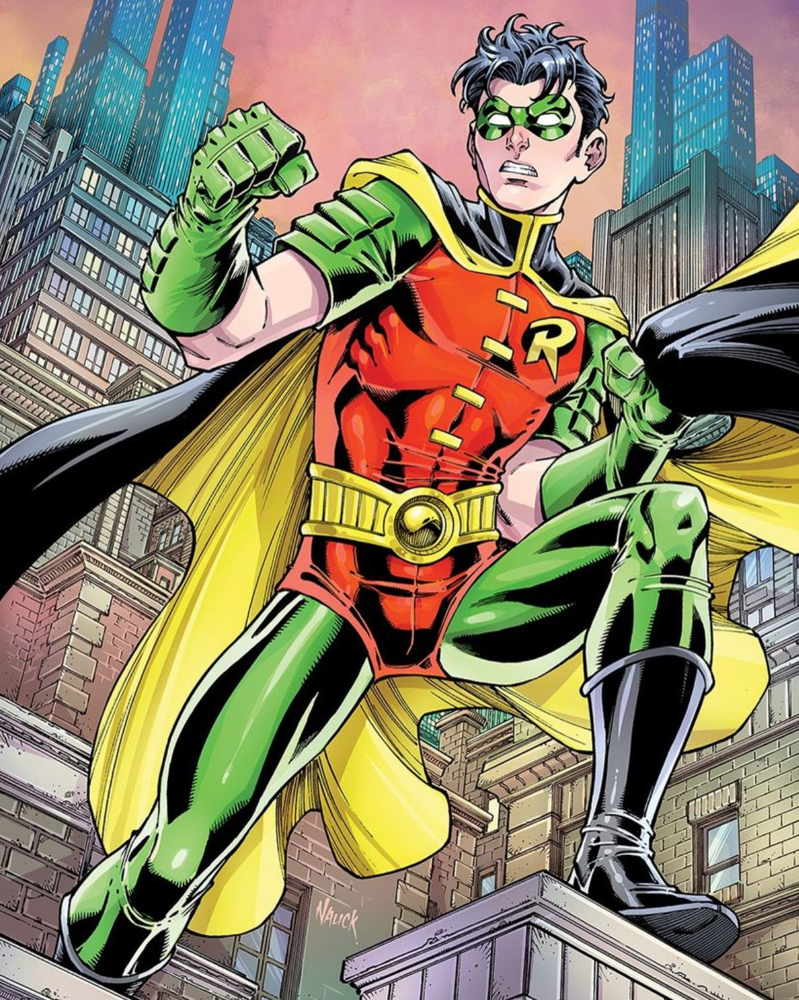

Aventuras y roles como adulto Durante su adultez, Dick no solo lucha contra el crimen en Gotham, sino que en ciertas historias más recientes se le ve involucrado en misiones de espionaje. En el cómic Grayson de Tim Seeley, tras ser desenmascarado en la televisión y fingir su muerte, se convierte en Agente 37 de Spyral, actuando como topo para Batman dentro de una organización de espionaje Wikipedia +1 . Esto representa su adultez no solo en términos de edad, sino también en complejidad moral y estrategia, mostrando su capacidad de operar de manera táctica e independiente.
inicio adolescencia niñez